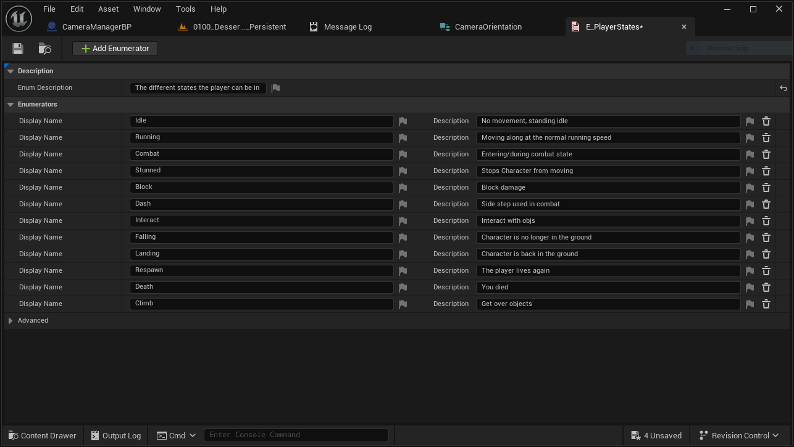
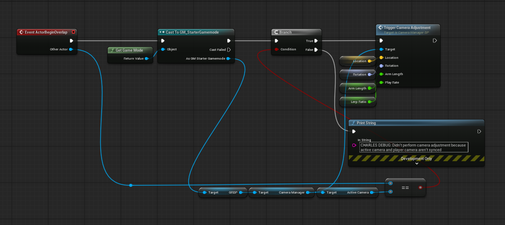
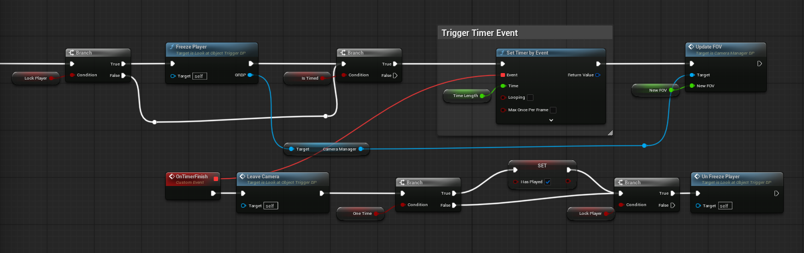
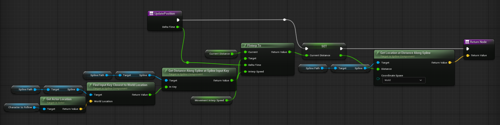

Orun
Overview
Orun was a first-semester prototype developed by a 27-person team at DigiPen Institute of Technology during my study abroad in Spain. Orun was an exploration game with puzzle and combat elements, drawing visual inspiration from games like Journey. As one of a small number of programmers on a team of predominantly artists, I owned the player controller framework and the full camera system.
Player Controller & State Machine
I built the initial player controller framework in Unreal Engine Blueprints, integrating global references, basic movement, and camera controls. A core part of this work was designing an enumeration-based state machine to handle transitions between combat, non-combat, and idle states. This was structured specifically so the animation programmer could easily reference and build on top of it.

Camera System
The camera system was my primary focus for the project and went through several iterations as the game's design changed. Working closely with producers and designers, I developed three distinct camera types.
Primary Player Camera
The primary player camera used a spring arm attachment with trigger-based rotation control. Manually placed triggers around the map would smoothly interpolate the camera to a new angle and support zoom in/out, giving designers precise control over how each area felt without hardcoding anything.

Static Object Camera
The static object camera locked onto a point of interest from a fixed position, useful for drawing player attention to key moments or puzzle elements.

Spline Camera
The spline camera tracked alongside the player along a designer-placed spline path, with adjustable follow speed and player proximity settings for smooth, cinematic movement.

All three camera types were built with designer-facing parameters including transition speed, zoom range, and one-time trigger options. This allowed design team to create varied experiences without needing to touch the underlying logic.
Challenges & Takeaways
Working on a 27-person team where 21 members were artists meant the programmers carried a heavy load, often collaborating on the same systems simultaneously. The camera system in particular required constant communication with producers and designers as the game's vision shifted throughout the semester. Building something flexible enough to support that kind of iteration was the central challenge of the project and one of my most valuable lessons.